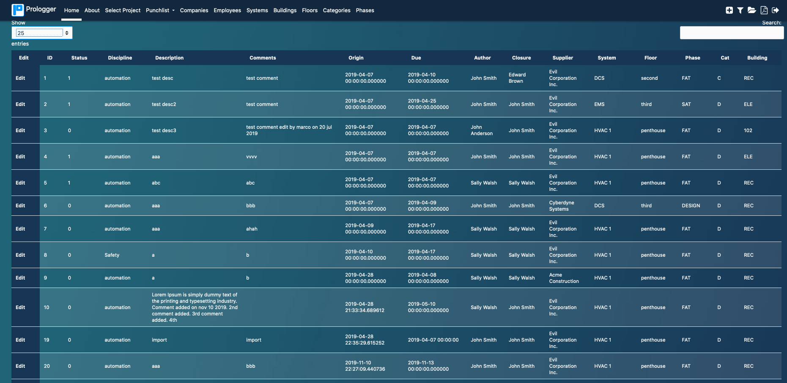

Multiple Projects
Define more than one project and manage all the data from a single installation onsite or in the cloud. Prologger 1.0 supports SQLite but can also be expanded to other databases

Prologger is a configurable management tool bringing together office and field management.
Define more than one project and manage all the data from a single installation onsite or in the cloud. Prologger 1.0 supports SQLite but can also be expanded to other databases
Add and Edit Punch Items, adding relevant detail to phase, location, system and vendor. Manage attachments related to each single item.
Import and Export Project Data From/To Excel, and to PDF. Automatically email Vendor with open activities to be done every day, week or month.
Customize Database with the fields you need for your specific projects. Customize your dashboard with the plot summarizing actual info about the project.
Manage Companies and Employees. Multi user access, with 3 different levels of privileges. Concurrent editing on the same project.
By using Prologger to monitor your projects, you will have the confidence that all the activities are performing on-time, with quality.